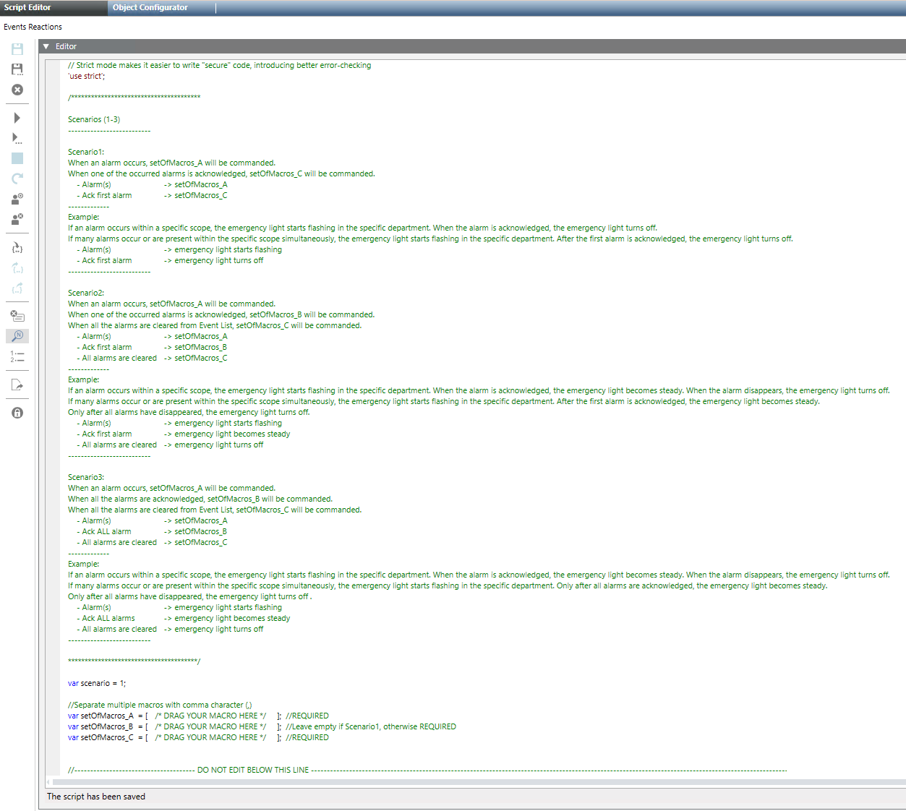

Events Reactions Scripts
This section provides reference and background information for integrating the Events Reactions Scripts extension module. For related procedures, see the step-by-step section.
This extension provides Desigo CC scripts that can execute macros in response to event status changes within a particular scope.
- To use this functionality you must first separately create the macros that you want to execute in various situations: for example, when alarms occur, are acknowledged, or cleared. For details about macros, see the relevant reference section.
- You can then customize the script to specify which macros to execute for each type of event status change. For details about scripts, see the relevant reference section.
- The script will respond in this way to events within the scopes associated to the user.

The logic of the Events Reactions script works for macros. To command points different from macros, you must modify the code of the script.
The Events Reactions Scripts
After installing the extension, you can import the Events Reactions script and open it in the Desigo CC Script Editor.
Inside the script, a scenario variable lets you set one of three options:
- Scenario 1: Execute macros when alarms occur, and when first alarm is acknowledged.
- Scenario 2: Execute macros when alarms occur, when first alarm is acknowledged, and when all alarms are cleared.
- Scenario 3: Execute macros when alarms occur, when all alarms are acknowledged, and when all alarms are cleared.
Three further variables, SetOfMacros_A, SetOfMacros_B, and SetOfMacros_C, let you define one or more macros to execute for each situation in the scenario, as in the table below:
| Set of macros to execute when.. | |||
scenario | Alarms occur in the scope | First alarm acknowledged | All alarms acknowledged | All alarms cleared |
1 | SetOfMacros_A | SetOfMacros_B | -- | -- |
2 | SetOfMacros_A | SetOfMacros_C | -- | SetOfMacros_C |
3 | SetOfMacros_A | -- | SetOfMacros_set B | SetOfMacros_C |

Scopes in the Event Reactions Script
The Events Reactions script operates within the scope rights of the Desigo CC user who starts the script. This means that:
- The script responds to a subset of events that are within the user’s scope.
- The macros executed by the script must also act on objects within the user’s scope.
NOTE: A scope is typically a collection of system objects of a building, district, or any other logical entity (based on the customer’s system architecture). Scopes are assigned to Desigo CC user groups, and individual Desigo CC users have access to the scopes associated with the user groups to which they belong.
Use Case Example for Event Reactions Script
The table below provides use-case examples for three scenarios in which the macros execute the following actions:
- setOfMacros_A: triggers flashing emergency light
- setOfMacros_B: the emergency light becomes steady
- setOfMacros_C: turns off the emergency light
Scenarios | Script Configuration | Use Case Example with macro for activating emergency light |
Scenario1 |
| If an alarm occurs within a specific scope, the emergency light starts flashing in the specific department. When the alarm is acknowledged, the emergency light turns off. If many alarms occur within the specific scope simultaneously, the emergency light starts flashing in the specific department. After the first alarm is acknowledged, the emergency light turns off. |
Scenario 2 |
| If an alarm occurs within a specific scope, the emergency light starts flashing in the specific department. When the alarm is acknowledged, the emergency light becomes steady. When the alarm disappears, the emergency light turns off. If many alarms occur within the specific scope simultaneously, the emergency light starts flashing in the specific department. After the first alarm is acknowledged, the emergency light becomes steady. Only after all alarms have disappeared, the emergency light turns off. |
Scenario 3 |
| If an alarm occurs within a specific scope, the emergency light starts flashing in the specific department. When the alarm is acknowledged, the emergency light becomes steady. When the alarm disappears, the light turns off. If many alarms occur or are present within the specific scope simultaneously, the emergency light starts flashing in the specific department. Only after all alarms are acknowledged, the emergency light becomes steady. Only after all alarms have disappeared, the emergency light turns off. |